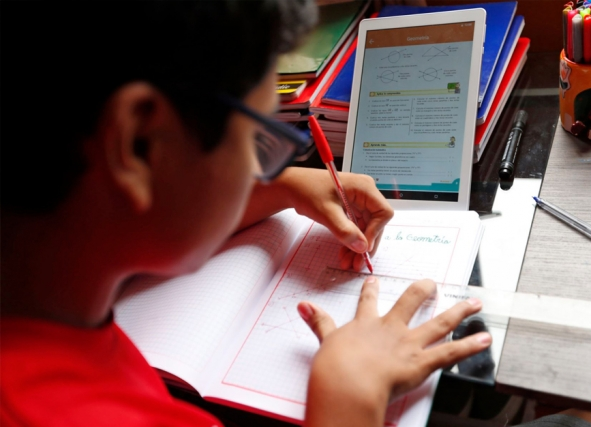

Actualmente en la situación que estamos viviendo (Pandemia del COVID-19), la educación principalmente se ha visto impactada; pero no solo eso,
muchos países no estaban preparados para una pandemia y por lo cual, una educación a distancia.

Algunas amenazas que afectaron a los jóvenes estudianetes en la pandemia 2020
El cierre de algunas escuelas por falta del factor económico
Pérdida del avance que teníamos en materia de educación
Aumento de la deserción escolar
Para finalizar, hemos pasado una etapa con educación a distancia no fue imposible, sin embargo, no estabámos preparados para una situación así.